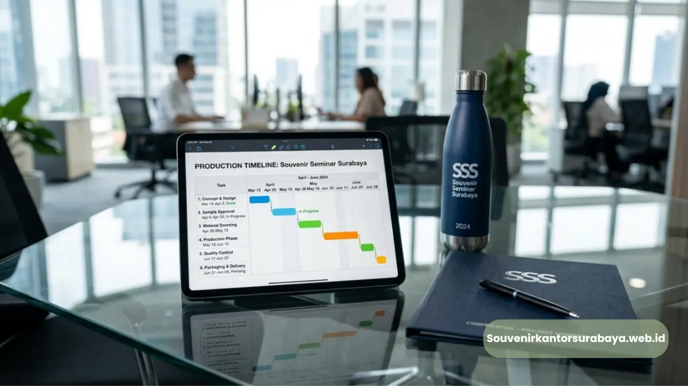

- Kapan Waktu Ideal Memesan Souvenir untuk Seminar?
- Mengapa Rentang Waktu Ini Dianggap Ideal?
- Faktor yang Memengaruhi Lama Waktu Produksi Souvenir Seminar
- Bagaimana Jumlah Peserta Memengaruhi Perencanaan Waktu?
- Apa Risiko Memesan Souvenir Seminar Terlalu Mendekati Hari Pelaksanaan?
- Apa Dampak Keterlambatan Souvenir terhadap Jalannya Seminar?
- Bagaimana Menyusun Timeline Pemesanan Souvenir Seminar yang Efektif?
Kapan Waktu Tepat Pesan Souvenir untuk Seminar Surabaya
Waktu tepat memesan souvenir untuk seminar Surabaya adalah minimal dua hingga empat minggu sebelum tanggal pelaksanaan, tergantung jenis souvenir dan jumlah pesanan. Pemesanan lebih awal memberikan ruang cukup untuk proses custom logo, produksi, dan pengecekan kualitas sebelum acara berlangsung.
- Pemesanan souvenir seminar idealnya dilakukan dua hingga empat minggu sebelum hari-H.
- Jumlah peserta dan jenis souvenir memengaruhi lama waktu produksi yang dibutuhkan.
- Memesan mendekati hari pelaksanaan berisiko membuat proses custom logo terburu-buru.
- Perencanaan waktu yang matang membantu memastikan souvenir siap tanpa kompromi kualitas.
- souvenirkantorsurabaya.web.id membantu perencanaan waktu pemesanan souvenir seminar Anda di Surabaya.
Kapan Waktu Ideal Memesan Souvenir untuk Seminar?
Waktu ideal untuk memesan souvenir seminar umumnya berkisar dua hingga empat minggu sebelum tanggal pelaksanaan acara. Rentang waktu ini memberikan ruang bagi proses konsultasi desain, custom logo, produksi, hingga pengiriman souvenir sebelum hari-H tiba.
Mengapa Rentang Waktu Ini Dianggap Ideal?
Rentang dua hingga empat minggu memungkinkan tim produksi menyelesaikan proses cetak logo dengan cermat tanpa terburu-buru, sekaligus memberikan waktu cadangan apabila diperlukan revisi desain sebelum souvenir dicetak dalam jumlah besar.
Faktor yang Memengaruhi Lama Waktu Produksi Souvenir Seminar
Beberapa faktor berikut umumnya menentukan berapa lama waktu produksi souvenir seminar yang dibutuhkan.
- Jumlah peserta — semakin banyak souvenir yang dibutuhkan, semakin panjang pula waktu produksi yang diperlukan.
- Jenis material dan teknik cetak — teknik seperti bordir atau laser engraving umumnya membutuhkan waktu lebih lama dibandingkan sablon.
- Kompleksitas desain logo — logo dengan banyak warna atau detail rumit dapat menambah waktu proses cetak.
- Ketersediaan stok produk — souvenir dengan model tertentu perlu dipastikan ketersediaannya sebelum proses custom logo dimulai.

Bagaimana Jumlah Peserta Memengaruhi Perencanaan Waktu?
Semakin besar jumlah peserta seminar, semakin banyak pula unit souvenir yang harus diproduksi. Perusahaan dengan jumlah peserta besar sebaiknya mengalokasikan waktu pemesanan lebih panjang dibandingkan seminar dengan skala peserta terbatas.
Apa Risiko Memesan Souvenir Seminar Terlalu Mendekati Hari Pelaksanaan?
Memesan souvenir seminar mendekati hari-H berisiko membuat proses produksi terburu-buru, sehingga kualitas cetak logo maupun kerapian hasil akhir berpotensi kurang maksimal. Selain itu, keterbatasan waktu juga mengurangi ruang untuk melakukan revisi desain apabila terdapat kesalahan pada tahap awal cetak.
Apa Dampak Keterlambatan Souvenir terhadap Jalannya Seminar?
Souvenir yang belum siap saat hari pelaksanaan dapat mengganggu kelancaran acara, terutama jika souvenir menjadi bagian dari seminar kit yang dibagikan sejak awal sesi. Kondisi ini juga dapat menimbulkan kesan kurang profesional di mata peserta maupun mitra bisnis yang hadir.
Bagaimana Menyusun Timeline Pemesanan Souvenir Seminar yang Efektif?
Penyusunan timeline pemesanan souvenir seminar sebaiknya dimulai dari penentuan jenis souvenir, konfirmasi jumlah peserta, penyerahan file logo, hingga proses produksi dan pengecekan akhir sebelum souvenir dikirimkan ke lokasi acara. Menyusun timeline ini sejak tahap perencanaan seminar membantu menghindari kendala waktu di kemudian hari.
Agar proses pemesanan souvenir seminar Anda berjalan lancar dan tepat waktu, souvenirkantorsurabaya.web.id siap membantu perencanaan jadwal produksi sesuai tanggal pelaksanaan seminar perusahaan Anda di Surabaya.
Waktu pemesanan souvenir untuk seminar Surabaya sebaiknya direncanakan minimal dua hingga empat minggu sebelum hari pelaksanaan agar proses custom logo dan produksi berjalan optimal. Perencanaan timeline yang matang membantu menghindari risiko keterlambatan yang dapat memengaruhi kelancaran acara.
Segera konsultasikan jadwal pemesanan souvenir seminar Anda melalui souvenirkantorsurabaya.web.id agar souvenir siap tepat waktu.

Hawa Nadira
Tim penulis CorporateGifts ID berfokus pada strategi souvenir kantor, merchandise korporat, dan inovasi brand untuk klien B2B.
Keahlian: Branding perusahaan, produksi souvenir, paket event, desain materi promosi.
Artikel Terkait

Block Note Spiral Hard Cover Perusahaan Surabaya Premium
Block note spiral hard cover perusahaan Surabaya adalah buku catatan bersampul keras custom logo premium untuk merchandise korporat.
Baca SelengkapnyaCustom Logo Block Note Spiral Hard Cover untuk Branding Perusahaan
Proses mencetak identitas visual perusahaan pada cover notebook menggunakan teknik hot print, sablon digital, atau UV printing.
Baca Selengkapnya
Souvenir Kantor Surabaya
Panduan komprehensif memilih souvenir kantor berkualitas tinggi untuk meningkatkan brand awareness dan hubungan bisnis.
Baca Selengkapnya